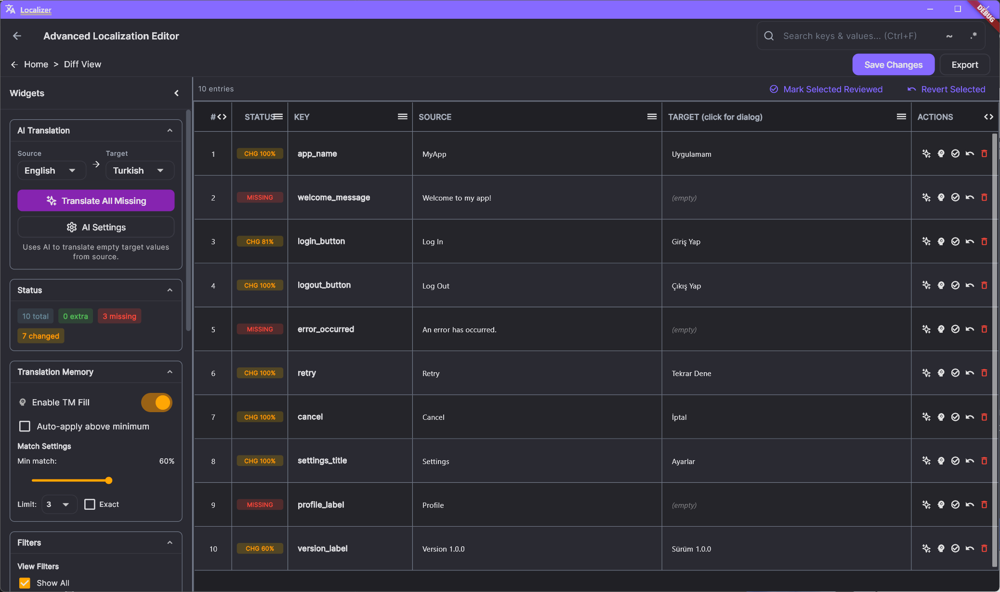
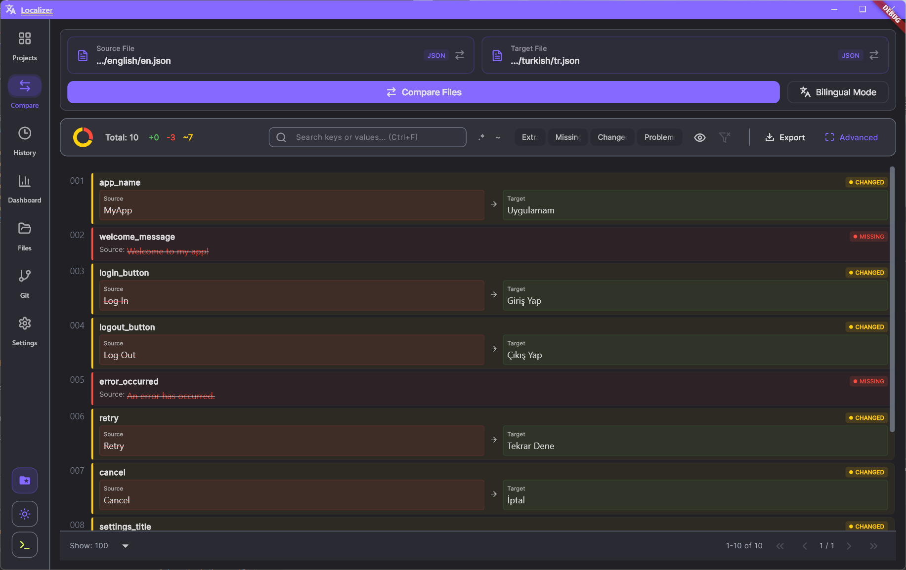
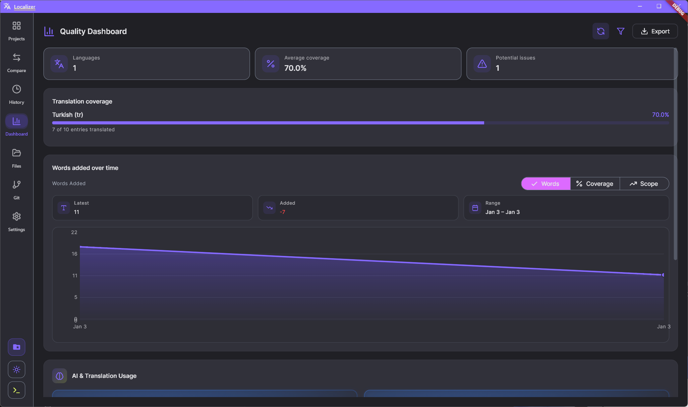
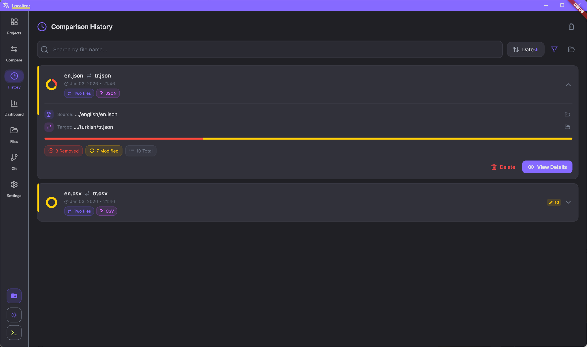
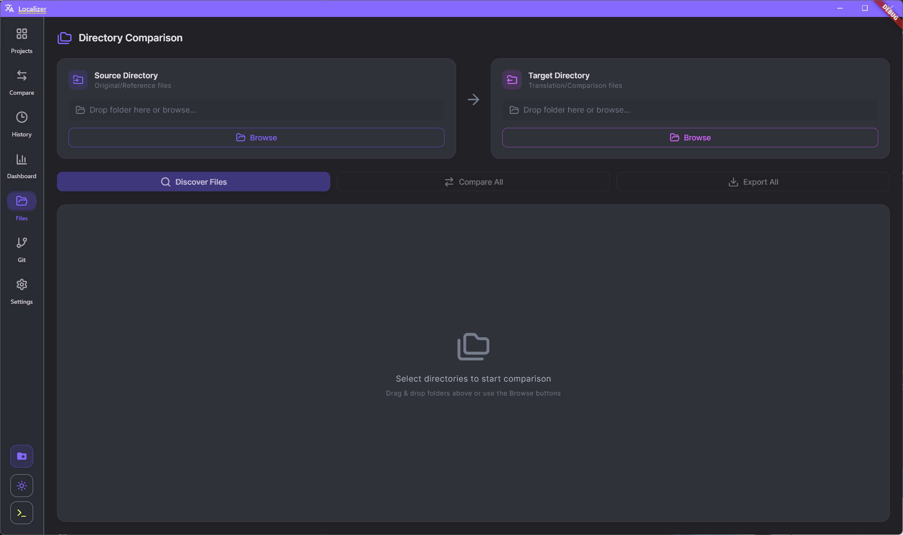
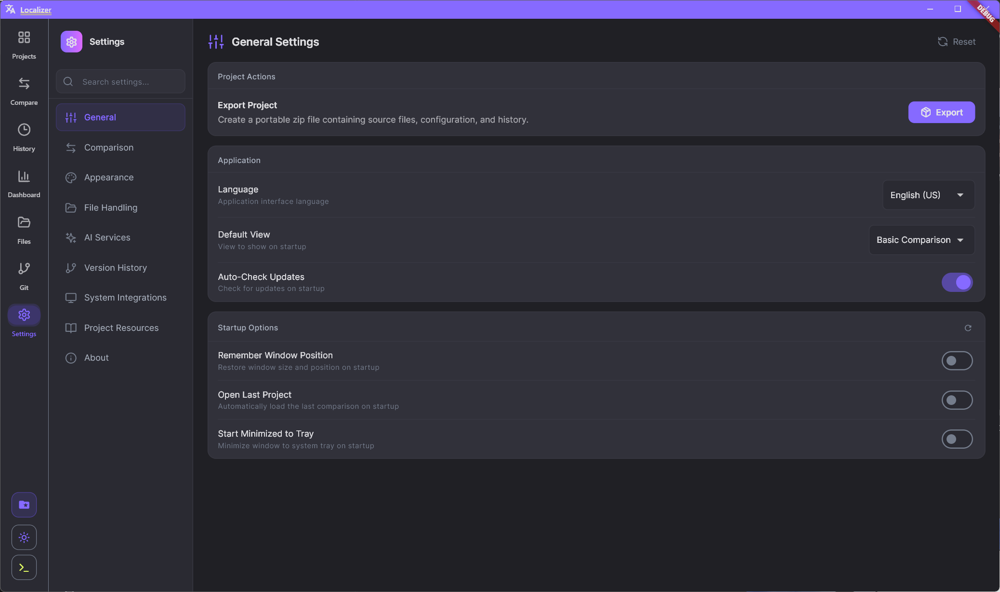
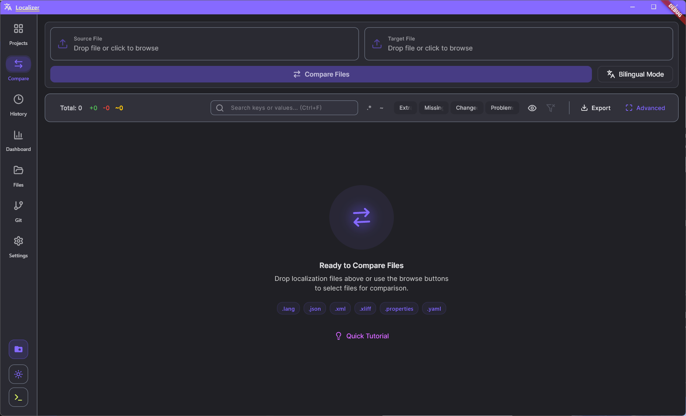

Deep difference detection
Compare additions, removals, and text drift in one glance with side-by-side context.

Desktop localization reviews, rebuilt for speed and clarity.
Compare source and target files, surface risky edits, and keep quality visible for every language version in a single desktop workflow.

Dense, visual, and practical. Every module is focused on reducing localization risk before ship.
Compare additions, removals, and text drift in one glance with side-by-side context.

Review full language packs across directories without manual file-by-file setup.
Monitor missing keys and progress trends before each release cycle.


Scale comparisons to real project folders and map matching locale files quickly.
Apply consistent review rules so every language update meets release standards.
Tune themes, compare rules, and AI settings to fit your current localization process.
The workflow keeps intent and detail in sync: maintain one stable review lens while interface evidence animates through each quality surface.



Use one desktop tool for change detection, quality visibility, and repeatable release checks.